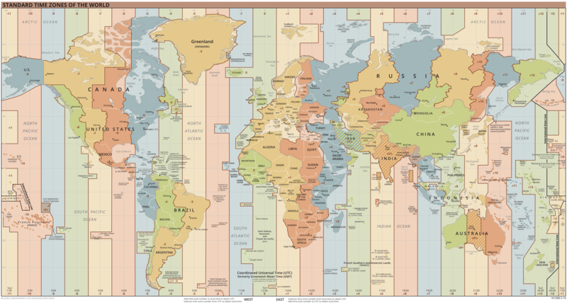

The Best Human Earth Calendar
Holocene Ordinal Decimal
By Benjamin Rubinger
Estimated reading time: 45 minutes or more
Summary and My Conclusion
What Is a Calendar
A calendar is a tool to organize and communicate dates and times. Calendars are fundamental to modern life. Some everyday examples are
- Next Saturday at 8
-
This calendar date uses 6 numbers+, my proposal uses two numbers and has the same accuracy.
The Current Calendar
The most popular calendar today is a Christian calendar called the Gregorian calendar, adopted 1582 AD October 15th by pope Gregory XIII. There are other calendars in active use besides the Gregorian and many more from history.
Why Change Calendars?
The reason I am writing this is because there are right answers in calendar design. Our calendar is wrong in several ways and everyone pays the price, until we adopt a better one. Afterward, everyone gets the benefits of a better calendar.
The Most Important Features of a Calendar
- Dates - communicate about events in the past and future
- Day of the year - track the seasons, to grow food and survive
- Time of day - track the amount of sunlight and sleep at night
Calendar Design
Calendars are defined by certain choices. Different choices make a different calendar. The key choices are
Epoch - which year is year 0? Gregorian uses the birth of Christ in 1 BC.
New year day - the day when the year changes. Gregorian uses January 1. Leap year is usually added before the new year day.
Group days into years - Gregorian uses 12 months.
New day time - the time of day when the date changes. Gregorian uses midnight, other options are sunrise, midday or sunset.
Divide a day into time - Gregorian uses 24 hours per day in two groups of 12, 60 minutes per hour, and 60 seconds per minute.
The HOD Calendar
This is my proposal for the best calendar for humans on Earth, the HOD calendar, Holocene Ordinal Decimal.
Epoch - Holocene era, 10,000 years before the Gregorian epoch, an arbitrary year at the beginning of human civilization. Add 10000 to the Gregorian year, so 2022 Gregorian is 12022 Holocene.
New year day - equinox going south, September 23rd Gregorian.
Leap year - same as Gregorian
Group days into years - ordinal days, the day of the year goes from 0 to 364, or 365 on a leap year. No months. You can add your own groupings like we already do with weeks or quarters.
New day time - midnight, same as Gregorian.
Divide a day into time - decimal time. Time of day is a decmial number between 0 and 1, midnight is 0.0, six AM is 0.25, twelve PM is 0.5, etc. With unlimited precision.
Additionally, eliminate daylight savings time and timezones. Everyone would use universal coordinated time (UTC).
Interactive HOD calendar
Why is the HOD calendar the best for humans on Earth? How did we get the Gregorian calendar in the first place? I have written the following book that explains it all, with animations and interactive calendars! Its a long journey, so I summarized my conclusions above. Thank you for reading.
Note: all the animations on this page can ⏸︎ pause and ⏵︎ play by clicking or touching anywhere in the animation.
I value your thoughtful feedback 💬 please use the
I am especially interested in
- 😮 which parts you find interesting, enlightening or surprising
- 😕 which parts you find boring or confusing
- ➕ things I should add
- ❌ errors and corrections
Introduction
📅 What Is a Calendar
A calendar is a system to organize time, mainly in the unit of days. Commonly calendars group time into days, weeks, months and years. A date describes a unique day within a particular calendar. For example, 10/21/22 is the date I started writing about this topic in the most common calendar. Any change to a calendar that changes the meaning of the dates is a new calendar. My inclusive view of calendar reform includes the time of day.
Why We Need Calendars
The three main reasons humans need a calendar are
- Dates - to communicate about events in the past and future
- Day of the year - track the seasons to grow food to survive
- Time of day - track the sunlight and sleep at night
Overall we use calendars to analyze, predict, plan and organize our activities by time. Calendars are fundamental to modern daily life.
Many calendars are capable of meeting our needs. Once you learn about multiple calendars, you can compare them. You can decide which calendar is
- More accurate
- Easier to learn
- Easier to use
The Motions of the Earth
Humans generally live on a mostly spherical planet called Earth which rotates and revolves relative to the sun. The motions of the Earth are central to our calendars.
Rotation is similar to turning your head when you are standing near a light, the Earth's rotation causes sunlight to periodically hit every part of Earth's surface. Half of the time a location on Earth's surface has sunlight (daytime) and half of the time a location gets less sunlight because the Earth blocks the sun (nighttime). Humans care about sunlight because we have a
A cycle of activity and rest that matches the cycle of visible sunlight.
View of Earth's rotation from the surface in the northern hemisphere
The Earth revolves around the sun, also called
The Earth goes around the sun in pretty much a circle, even though the orbit is technically an ellipse.
The rotation of the Earth is not perpendicular to the sun, it is tilted, the Earth's axis of rotation is ~23.4 degrees off of vertical. The combination of the Earth's orbit and the tilt of its axis of rotation changes the amount of sunlight that hits parts of the Earth at different parts of the orbit, and this causes the seasons.
Seasons are changes to the weather, including higher and lower temperatures, and more and less rain. Humans care about seasons. One reason to care about the seasons is that most of the food that we eat can only grow during specific seasons. If we do not correctly track the seasons then we can fail to grow food and starve. Our current calendars work fine, so we will not starve because of our current calendars.
What Calendar Do We Currently Use?
The calendar in most common use today is a Christian calendar called the Gregorian calendar, introduced 1582 AD October 15th by the Catholic pope Gregory XIII.
You can enter datetimes in the Gregorian calendar in several places on this page using these inputs. The rest of the page will update to whenever you select.
There are lots of other calendars besides the Gregorian calendar, many of them in popular use. Other calendars I will describe include the Egyptian calendar, the Chinese calendar, the Islamic calendar, the Hebrew calendar, the Roman calendar, the Julian calendar, the French republican calendar, Julian days, Unix time and star trek stardates.
Parts of the Calendar and Why We Need Them
Years and Why We Need Them
A year is the time it takes for Earth to cycle through all the seasons and for the sun to return to the same place in the sky. We care about years because accurate years track the seasons, and seasons affect all of our outdoor activities, for example farming, which we need to survive.
Epoch
When we count anything, including years, we need to start counting from somewhere. The starting year of a calendar, which should be year 0, is called the epoch. In the Gregorian calendar the epoch is 1 BC, 2022 years ago at the time of writing. We could choose a different epoch, a different year 0, for example we could choose the year 1970 AD instead. Then the year of writing would be 52 because 2022 is 52 years after 1970.
🎉 New Year Day
We must choose when one year ends and the next year begins. In the Gregorian calendar the new year day is January 1. In the Roman calendar, for example, the new year day was in March which is why leap year is at the end of February.
Months and Why We Need Them
A month is a group of days that matches the duration of the orbit of the moon around the Earth, often measured from new moon to new moon. The phases of the moon are
🌑 new
🌒 waxing crescent
🌓 first quarter
🌔 waxing gibbous
🌕 full
🌖 waning gibbous
🌗 last quarter
🌘 waning crescent
🌑 new ...
The months of the Gregorian calendar
The months of the Gregorian calendar do not match the orbit of the moon. Months in some other calendars do match the orbit of the moon, such as the Chinese calendar.
Why Do We Need Months
It is easy to see the phase of the moon, all you have to do is look up at the sky at the appropriate times. It doesn't take any special equipment or knowledge, you just need to be able to count to 30 (that is about how many days the moon's orbit takes). Many calendars use a group of 12 accurate lunar months to make a lunar year. A lunar year is close to the solar year, but is several days shorter, so these calendars are not fully synchronized with the seasons, but they are easy to operate. In my opinion months are not critical to our calendar.
Exercise
Is the moon visible now? The next time you can see the moon, identify the moon's phase with your own eyes.
Days and Why We Need Them
A day is the time it takes from one midday to the next, with sunset, midnight and sunrise in between. Days are essential to human health and human activity because humans are diurnal animals, we have periods of activity and rest that match the amount of sunlight, which is what we track with the calendar unit of a day.
New Day Time
We need to choose the time of day when one day ends and the next day begins. In the Gregorian calendar the day changes at midnight. The Egyptian calendar changes days at sunrise, astronomers change days at midday and the Hebrew calendar changes days at sunset.
Sundials (not a Part of a Calendar)
Tracking time during a day was originally done using sundials. A sundial is a device that uses a fixed indicator, such as a pole, and the sun to measure the time of day. A sundial can be as simple as a stick in the ground or more complicated. The indicator casts a shadow that moves across the face of the sundial as the sun crosses the sky during the day. The indicator's shadow sweeps across a half circle, a semicircle, in the direction that we call clockwise. The shadow appears at sunrise and is the longest, the shadow is the shortest at midday, then the shadow gets long again in the afternoon. The shadow disappears at sunset, when the Earth blocks the light between the sun and the sundial again.
Exercise
When it is daytime, look at the shadows from sunlight and check what angle they are, then check again later in the day to see how much they have changed. Put a stick in the ground or setup your own sundial to see the time of day.
Hours, Minutes, Seconds, and Why We Need Them
Hours, minutes and seconds are units we use to talk about time with smaller sizes than a day. A day has many hours, an hour has many minutes, and a minute has many seconds.
The Gregorian calendar uses 24 hours in a day with two sets of 12 hours before and after midday, 60 minutes per hour and 60 seconds per minute. Times smaller than a second use decimals, such as 0.5 seconds. Other calendars divide days into different kinds and numbers of parts.
Units smaller than a day are useful if you want to meet with someone. It helps to coordinate a precise time to meet, so you can both arrive at about the same time, instead of one of you arriving and waiting up to a day for the other person. We can use smaller units of time to talk about shorter events like running a footrace without using the comparatively large unit of a day.
Weeks and Why We Need Them
A week is a group of days used to organize work schedules. The Gregorian calendar has a 7 day week because it is a Christian calendar, the book of genesis describes that god created the world in six days and rested on the seventh day. In the Gregorian calendar we do not typically include the week in the date. Other calendars have different length weeks, such as 10 days. In my opinion weeks are not essential for a calendar because work schedules are diverse.
Daylight Saving Time and Why We Need It
Ancient civilizations organized their activities around sunlight without the use of clocks, but once we developed clocks and created rigid schedules, we found that there is a problem from the changing sunlight hours. If you start work at the same time each day by the clock, some parts of the year the start time is before the sun rises, too early. Some parts of the year the start time is long after the sun rises, too late.
One solution is to shift the calendar by one hour forward at one part of the year, then shift the calendar one hour back at another part of the year, so that the fixed working hours are better aligned with the sunlight hours. We call this biannual time shifting daylight saving time and various regions have been practicing it since 1908 AD. Most of the world does not observe daylight saving time.
Timezones and Why We Need Them
Sundials measure local time. When the sun is highest above that sundial, that is when that sundial indicates midday. If you have another sundial located to the east or to the west, the time there is different from the time here. The time on the opposite side of the Earth is half a day different from the time where you are. If we want to set everyones clocks so that the clocks chime midday when the sun is highest in the sky, then every clock would have a different time and we don't want that. We want as many clocks as possible to have the same time of day, so people can coordinate using synchronized clocks, and we want to minimize the difference between what the clock says and where the sun appears in the sky.
Our solution is time zones. We created ~24 time zones, each time zone is a north-south stripe that goes from pole to pole. Generally each time zone shifts the time by one hour so all clocks are less than half an hour different from solar time. One hour time zones are large enough that probably all the people you want to meet are in the same time zone with you, so you have synchronized clocks.
International Date Line and Why We Need It
Time zones have a side effect, which is the date line. Midnight is the new day time in the Gregorian calendar, when the current day becomes the next day. If it is midday where you are, on the opposite side of the Earth it is midnight, which means that the hour of the day is not the only thing that changes between time zones, the date also changes in ~one timezone every hour. It is difficult enough to figure out what hour it is in another timezone, but you also sometimes have to deal with a different date. The date line is an unavoidable consequence of timezones.
Background
I attempt to explain all the stuff you will need to design your own calendar
What Is a Year Exactly
A year in the Gregorian calendar is a solar year, also called a tropical year, equals ~365.2422 days, the Earth goes through all the seasons and the sun reaches the same point in the sky again. The solar year is different from the sidereal year, which is the time it takes for the Earth to go around the sun once, equals one revolution, equals ~365.2564 days. The orbital period of the Earth is not a constant, and many factors can cause it to change over time, such as asteroid impacts, sun activity and the gravity of other planets.
Seasons
What Are Seasons
The Earth is very close to a sphere and the Earth spins on its axis about one rotation per day. The part of the Earth that spins the fastest in the middle between the poles is called the equator. Everything above the equator is the half sphere called the northern hemisphere (hemi sphere meaning half sphere), and everything below the equator is the southern hemisphere. There is no reason why we picked a particular pole as north.
The Earth's axis of rotation is ~23.4 degrees off of vertical relative to the sun, so as the Earth revolves around the sun during a year, different parts of the Earth get more and less sunlight causing the seasons. Summer receives more sunlight and is hotter and winter receives less sunlight and is colder. The seasons are equal and opposite between the northern hemisphere and the southern hemisphere, so in the southern hemisphere it is cold when the northern hemisphere is hot, and the southern hemisphere is hot when the northern hemisphere is cold.
Four Seasons
We commonly describe four seasons, winter, spring, summer and fall. Fall is also called autumn. Seasons are especially important for farming, because plants only germinate, grow and bear fruit under certain conditions often related to the season. An accurate calendar that tracks the seasons is a critical tool for farmers to grow food and feed all of us. Tracking the seasons is important for many other activities besides farming, such as outdoor activities.
Seasons are the main reason we developed calendars and care about years.Four Seasons Do Not Apply Globally
The concept of exactly four seasons doesn't apply globally. Here are examples of regions that have different numbers of seasons.
Seasonality
The farther away from the equator, the more extreme the seasons, meaning that there is more variation in the length of sunlight hours. In the arctic circle or the antarctic circle near the axis of rotation for the Earth called the poles, there are periods of continuous daytime and continuous nighttime. At the poles, half the year is continuous daytime and half the year is continuous nighttime, meaning one sunrise and one sunset per year.
Equinox, Solstice, Tropics
There is always a point on the surface of the Earth that is closest to the sun, that point moves north and south over a year, back and forth. An equinox is when that point crosses the equator. A day on the equator with an equinox has 12 hours of day and 12 hours of night. There are two equinoxes per year, one when the sun crosses the equator going north, and the other when the sun crosses the equator going south. After each equinox, the sun continues in that direction until it reaches its farthest point of the year in the north or the south. That is called a solstice and will be the longest day in that hemisphere and the shortest day in the opposite hemisphere. Over a year there will be four events
- Equinox going south
- Southern solstice (longest day of the year in the south, shortest day of the year in the north)
- Equinox going north
- Northern solstice (longest day of the year in the north, shortest day of the year in the south)
- ...
The line that the sun reaches farthest north is called the tropic of cancer and the line that the sun reaches farthest south is called the tropic of capricorn, both named after constellations of stars.
Seasonal Lag
The longest day in a hemisphere means the most sunlight hours. The most sunlight hours would make that day the hottest day of the year, but the longest day of the year is not the hottest day of the year because of the thermal mass of the Earth. This topic is called seasonal lag. The air, water and rock of the Earth all absorb and hold onto heat, so the surface temperature keeps rising after the longest day until the sunlight hours are shorter than the rate that the Earth radiates the heat and the temperature starts decreasing. Seasonal lag can be up to two months between the longest day and the highest temperatures or the shortest day and lowest temperatures.
Where Daylight Saving Time Is Useful
Calendars help people coordinate their activities based on the amount of sunlight. Depending on the location, sunrise and sunset times can shift a little or a lot during a year. Near the equator, sunlight hours don't change very much. At the north or the south pole, the sun rises and sets only once a year, so sunlight hours flip between zero for half of the year and all the time for half of the year. Daylight saving time has no benefit near the equator or near the poles. Daylight saving time has benefits in two bands of latitudes where the daylight hours shift enough to affect a fixed schedule but not too much. That is why daylight saving time is only adopted by parts of north america, europe, south america and australia.
What Is a Month Exactly
A month is a group of days created to match the orbital period of the moon around the Earth, equals one lunation, equals ~29.53 days. In order to stay synchronized with the day, months have a whole number of days, so calendars with accurate months will sort of alternate between 29 and 30 days per month.
What Is a Day Exactly
A day is the time it takes for the Earth to complete slightly more than one rotation relative to the sun, also called a solar day when you want to distinguish different definitions of a day. A solar day is most easily measured from midday to midday and works out to 86 400 seconds (60 seconds per minute * 60 minutes per hour * 24 hours per day = 86 400).
Why is a day slightly more than one rotation of Earth? Because the Earth revolves 1 / ~365.2422 of the way around the sun during that day so the Earth needs to rotate a little more than once for the same point to line up with the sun again. The time for exactly one rotation of Earth is called a siderial day and is about four minutes shorter than a solar day. The Earth's rotation is not a constant. The speed of Earth's rotation changes for several reasons including the moon, and is overall slowing down over time very slightly.
What Is a Second Exactly
The second is a unit in the metric system, it is reproducible using cesium clocks. Count ~9 billion (9 192 631 770) hyperfine transitions of cesium 133 and that will take exactly one second as defined by the metric system. This definition was adopted in 1967 to replace the definition based on the movement of the Earth relative to the sun. The problem with basing the metric system on the motion of the Earth is that the Earth's rotation and revolution change, causing a shifting foundation for the metric system when the metric system prefers a fixed foundation. The atomic clocks keep consistent time and when the motions of the Earth shift enough one way or another out of sync from the atomic clocks we add a leap second to civil time to synchronize the atomic time with Earth's position.
Seconds are originally derived from days, where we arbitrarily split up the day into hours, minutes and seconds. Now the metric system has anchored the duration of a second, and defines days from seconds.
What Is a Week Exactly
The Gregorian calendar has seven day weeks with about four weeks per month. The work week starts on Monday, while the convention used to be that the new week day is Sunday. The english names of the days of the week in the Gregorian calendar are
Lunar Calendars
Lunar calendars follow the moon with months that average ~29.53 days and usually uses 12 cycles of the moon for a ~354.36 day lunar year. The lunar year is close to a solar year, but it is ~10.88 days shorter. Lunar calendars do not align with the solar year, so the lunar years shift through the seasons on a ~33 year cycle before looping back. The most popular lunar calendar is the Islamic calendar.
Solar Calendars
Solar calendars match the apparent motion of the sun in the sky, one cycle equals one year, equals ~365.2422 days. The common calendar that we use, the Gregorian calendar, is a solar calendar. The months in a solar calendar don't line up with the moon but the days and seasons line up with motion of the sun relative to the Earth. Solar calendars need leap days in order to match the fractional number of days in a year.
Lunisolar Calendars
Lunisolar calendars match the movements of both the moon and the sun and reconciles them. They keep days aligned with the sun, months aligned with the moon, and seasons aligned with the year. The Chinese calendar, the Babylonian calendar and the Hebrew calendar are examples of lunisolar calendars.
Leap Days
Years take ~365.2422 days and calendars are usually organized by whole days. Rounding down, a year is 365 days long. The process of a leap day adds an additional day called a leap day into a year, the 366th day of that year. The process is commonly called leap year but what leap year means is a year with a leap day in it. A year without a leap day in it is called a common year.
Each year without a leap day shifts the position of the Earth around the sun by about a quarter day in the calendar until we use a leap day to realign the calendar with the sun. Leap days are added at the frequency that matches the fractional days in the solar year, or slightly less than once every four years. If you don't have any leap years at all, such as in the Egyptian calendar, every year your calendar will shift about a quarter day, and the seasons of the calendar will slowly shift until they don't match the seasons caused by the sun. The seasons will keep shifting until eventually they will come back to where you started making a ~1507 year cycle. If we want a solar calendar with whole days that follows the movements of the sun relative to the Earth, we need to have leap days, and we need to have the right number of leap days, ~0.2422 per year. Any fixed formula for leap days will eventually not match the motions of the Earth around the sun, because the Earth's motion is very regular, but is disturbed by the moon, asteroids, other planets and things like that. In order to keep a calendar aligned with the occasional changes in the Earth's motions, we have a leap second system to add leap seconds as needed.
Intercalation
The process of adding an extra unit of time outside the normal schedule of a calendar to keep the calendar synchronized is called intercalation. For example, the Egyptian calendar is 12 months of 30 days giving a 360 day year, but the calendar has years with 365 days to match the solar year. The Egyptian calendar adds 5 days that are not part of any month and those additional days are an example of intercalation.
Leap Months and the Metonic Cycle
Lunisolar calendars stay in sync with both the sun and the moon. You can't add a leap day to a lunisolar calendar because then the months would be out of sync with the moon. The lunar year is ~10.88 days shorter than the solar year, so after 3 lunar years the lunisolar calendar is ~32.64 days behind the Earth's orbit. Instead of adding a leap day, lunisolar calendars add an entire leap month, a 13th lunar month to the year. The frequency of leap months should be every ~2.71 lunar years (~29.53 / ~10.88 = ~2.71). An ancient Greek named Meton from Athens observed that a 19-year cycle with a leap month added in years 3, 6, 8, 11, 14, 17 and 19 is close to the right ratio (19 / 7 = ~2.71). This cycle is called the Metonic cycle (although Meton may have learned about the cycle from the Babylonian calendar). The Metonic cycle was applied in many lunisolar calendars including the Babylonian, Celtic, Greek, Hebrew, early Roman and others. The Metonic cycle is so cool that it was used to create
That work as lunisolar calendars to track the seasons.
🕰️ Conventional Time, Sexagesimal Time
Time of day is conventionally grouped into 24 hours, usually 12 hours before midday (ante meridiem, am) and 12 hours after midday (post meridiem, PM). An hour is split into 60 minutes, and a minute is split into 60 seconds. The metric system groups numbers by 10s, also called base 10, also called decimal, such as 1, 10, 100, 1000. Grouping numbers by 12 is called duodecimal, and grouping numbers by 60 is called sexagesimal. So we currently use sexagesimal time.
The use of the sundial and duodecimal gave us 12 daylight hours, and then doubling the daylight hours for nighttime gave us two 12 hour periods for a total of 24 hours a day. The use of sexagesimal time for minutes and seconds was introduced by Al Biruni, an Iranian scholar around the year 1000 AD.
Decimal Time
Decimal time is the idea that instead of breaking up the time of day into groups of 12 or 60, we should break the day up by groups of 10 and then the time of day can be described by one number. The simplest example is that midday should be 0.5 of a day instead of 12 PM. One way to break up the day with powers of 10 is to have 10 decimal hours, each decimal hour with 100 decimal minutes, and each decimal minute with 100 decimal seconds. If we compare sexagesimal time with decimal time, there are 86 400 seconds in a sexagesimal day and 100 000 decimal seconds in a decimal day. The length of a decimal second is not the same as a sexagesimal second, but they are similar
- 1 decimal second = ~0.8 sexagesimal seconds
- 1 sexagesiaml second = ~1.16 decimal seconds
- Decimal seconds are 13.6% faster than sexagesimal seconds
If we write out a sexagesimal time the conventional way it looks like this
10/21/2022 11:14:05 AM
hour 11 out of 12 hours in the morning
minute 14 out of 60 minutes per hour
second 5 out of 60 seconds per minute
before midday indicator
In decimal time this could be written as
2022 291.46811
hour 4 out of a 10 decimal hours per day
minute 68 out of 100 decimal minutes per hour
second 11 out of 100 decimal seconds per minute
The decimal time is shorter and has a simpler structure than sexagesimal time, but it might look confusing to you because you might have never seen decimal time before. Of course if you are familiar with sexagesimal time and unfamiliar with decimal time, sexagesimal time will be easy for you to understand and decimal time will be confusing for you. But that is not a fair comparison. A fair comparison is how easy or hard each system is to use if you have equal experience with them.
If you don't like dealing with tiny fractions of a number, you can shift the decimal point over and write times in terms of seconds instead of days. An entire decimal day is 100 000 seconds, so the time of day I wrote above could equally be written as 468 110 microdays, no decimal point needed. No matter how you structure it, if you want to describe a time precisely then it requires several digits. If you want to describe the time less precisely you can use fewer digits, for example you could round it to 47k decimal seconds or 4.7 decimal hours.
Decimal time requires fewer digits in total than sexagesimal time because all the parts of the time are powers of 10. One central claim of the metric system is that using units that are all powers of 10 is easier to work with than units mixing different number bases such as 12 and 60. With sexigesimal time we still resort to decimal time for subseconds. Decimal time takes what we already do for subseconds and applies it to the whole day, with variable precision.
It is hard to read long strings of numbers, which is why we use commas within large positive numbers like 1,234,567. For clock displays, we could split up the numbers in the long fraction of the day to make them easier to read, 2022 291.4 68 11 222 333. The data for the date should not have any spaces or separators within the numbers.
We currently have several words for parts of a day, such as hours, minutes, seconds, milliseconds, microseconds and more. We can adapt these words for metric time by using the words deciday for tenths of a day instead of hours, centiday for a hundreth of a day, milliday for a thousanth of a day, microday, and scientific notation for tiny fractions.
More about Epoch and Eras
If we count years in a calendar, we have to choose a year to start counting from, a year zero. In the Gregorian calendar, this is claimed to be the year of the birth of Jesus in 1 BC. Other calendars choose an epoch based on the year of the creation of the world, the year of the birth of a leader or the year of the formation of a country or government.
There are some calendars that use regnal eras. In an era system, each consecutive ruler defines their own era with their own year one or year zero. The current year is the offset from the current era. To understand a date many years in the past requires knowledge of how long each era was to calculate the number of years between now and then. Eras have an advantage of usually having a small year number, eras have a disadvantage of making year numbers in different eras incomparable without detailed era knowledge.
Other Choices for the Epoch
💥 the Beginning of Time
The beginning of time with the big bang is the universal epoch. The current estimate of when the big bang occurred is 13.787 billion years ago with an estimated error range of 20 million years. We need higher precision with an error under a year or so to be able to use this event as an epoch without having to change it later. It is inconvenient to deal with such large year numbers all the time, for example if the current year would be 13 787 002 022 instead of 2022. Every choice of epoch will eventually face the problem of very large year numbers. If the Gregorian calendar persisted for 13.787 billion more years, the year number in the far future would be the same large number as if we adopted the big bang as the epoch now.
🌍 Formation of the Earth
The formation of the Earth is a great epoch choice for an Earth calendar based on Earth years, because Earth years only make sense as a concept once the Earth exists. The current estimate of the formation of the Earth is 4.54 billion years ago, with an error range of 40 million years. That value isn't precise enough to base an epoch on, and the value is too large to write all the time. Another problem is that the formation of the Earth is a continuous process that doesn't have a bright line that allows us to identify a moment, or in this case a year, when the Earth comes into existence.
Major Prehistoric Events
🦠 abiogenesis, formation of life on Earth, ~4 billion years ago
🪱 first multicellular life, ~3.5 billion years ago
🪲 first terrestrial life, ~1 billion years ago
🚶 first modern humans, ~315 000 years ago
🧑🌾 neolithic revolution, ~11 700 years ago
There are many momentous occasions that we could use as an epoch, but they occurred very long in the past and we don't have precise dates for them to base our calendar epoch on.
We could make use of approximate dates and arbitrarily choose a date within the range as our epoch. This approach has been proposed several times with the Holocene era, referring to the neolithic revolution, the period when humans switched from hunter-gatherer lifestyles to farming. This transition is arguably the beginning of human civilization and marks the single occasion when calendars became important. The neolithic revolution is recent enough that we have physical evidence and can estimate when it occurred. The current estimate is 11 700 years ago. The estimate is approximate, and improved evidence or analysis can and has changed the estimated date of the start of the neolithic revolution.
The Holocene calendar proposes to subtract 10 000 years from the Gregorian epoch, effectively adding a leading 1 to our current year, for example 2022 becomes 12022. This epoch is not exactly the beginning of the neolithic revolution, but the idea is that practically all events of human civilization will fall after that epoch.
Some of the problems with this proposal is that the year is not precise, the exact epoch is still derived from the Gregorian epoch, the year number is one digit longer, and future analysis might make this epoch more inaccurate.
✨ Julian Day Epoch
4713 BC is the epoch for the Julian day calendar. The particular year was derived based on cycles of the Gregorian calendar and Roman tax collection, so the derivation is not very meaningful today. It is an arbitrary yet specific date that is before written history and has been in use as an epoch for hundreds of years, primarily by astronomers.
📚 Oldest Recorded Date
There are some written accounts that describe a solar eclipse or another detail that we can back calculate to a specific datetime. We could choose the earliest of those recorded historical events and make that the epoch. According to that approach however, if archeology discovers a document with an earlier verifiable date, we would need to change the epoch again. We want a stable epoch. It is good to celebrate a human event, but the choice of any particular human event seems to be random and overly specific.
>| Unix Epoch
Unix time uses an epoch of 1970-01-01. A lot of people living today were born after 1970, so many of the events that we talk about would be after the epoch. It is easier to talk about dates after the epoch. If we chose an epoch after 1970, more and more dates that we commonly discuss would be before the epoch and that is more difficult for people to deal with than keeping dates in common conversation after the epoch. The anno domini epoch was established long after the life of Jesus, so people could use the new epoch to talk about dates in the recent past without crossing the epoch.
Now
We could declare that the epoch is when we choose to adopt the new calendar. That is a selfish choice, but if the choice of epoch is arbitrary then it also can't be wrong, which is better than choosing an event that is supposed to be important but becomes unimportant. Recontextualizing history to before and after the adoption of a calendar really elevates the importance of the calendar above where the importance of a calendar should be, but we have to elevate something as the epoch. As we see with the anno domini system, elevating any particular person or event can eventually become a problem for a calendar when that person or event loses relevance.
More about Timezones and the Timezone Map
{kind=link}
Timezones help us set our clocks close to the solar time while allowing large groups of people to synchronize their clocks to make coordination easier. You don't want a timezone line to go through a large human settlement, because it is inconvenient for people in one part of town to be in a different timezone than another part of town. If you cross the timezone line many times during your day then your time will shift by one hour back and forth. Any simple way of drawing the timezone lines will draw the line through the middle of a large human settlement.
Large human settlements avoid this problem by moving the time zone line so that the entire settlement is in one time zone. This is convenient for the people in that settlement, but when every large human settlement near a time zone line does this, it causes the definition of the timezone lines to become very complex. Instead of a simple rule like we have for every other part of our calendar, the timezone map is a complex geopolitical map. Not only is the timezone map complex, the timezone map changes frequently, often more than once a year. The simple idea of 24 stripes is laughable in the face of the real timezone map pictured above, where timezone lines follow the curves of rivers. One notable case is the country of china which has only one time zone even though its territory extends across 5 time zone stripes. Software has to use the timezone map to try to figure out what day and time it is at a given location.
Greenwich Mean Time, Gmt, Coordinated Universal Time, UTC
Establishment of the Observatory at Greenwich
Greenwich is a town in the southeast of London, England. Greenwich has an observatory that was established in 1675 AD to use astronomy to solve the problem of determining longitude when travelling at sea, commonly phrased as the question "where are we now?" anyone who has travelled without GPS knows this feeling. Britain was a naval power and wanted to reliably navigate the oceans. Several european countries at that time, including Britain, offered prizes for a solution to the longitude problem. Two solutions were found, and one of them was to use an accurate clock and some observations of the stars to determine the longitude.
Timekeeping
The Greenwich observatory was then used to keep accurate time by precisely measuring midday to help sailors set their clocks. Starting in 1833 the observatory communicated the time by dropping 🔴 a large time ball down a high pole precisely at noon every day so that nearby ships in the river Thames could synchronize their clocks to it. This practice is the origin of the ball drop tradition on new years eve.
Standardization
Before the introduction of railways, towns in England kept their own time of day. Each town kept a different time. When railways were developed they travelled through all the different towns, and they needed a consistent time. In 1848 the railways standardized their clocks on the Greenwich observatory time, which then became the standard time across England and nearby territories.
Greenwich Mean Time
The Greenwich observatory could observe precise solar time, but real world irregularities of the motion of the Earth causes the solar time to disagree with constant time by up to 16 minutes faster or slower at different parts of the year. Instead of reporting the irregular solar time, the astronomers used the solar time to keep their clocks accurate and reported the average time, they call it the mean time. That is how we got Greenwich mean time, GMT.
The Prime Meridian and the Universal Day
International Meridian Conference
In 1851 ships started determining their longitude in reference to the Greenwich observatory, and in 1884 there was international standardization of the Greenwich observatory as the reference longitude, also called the prime meridian, the definition of 0 degrees longitude. The same conference proposed that the universal day would have the new day time be midnight at Greenwich mean time, but the universal day wasn't adopted yet. In 1924 Greenwich observatory started transmitting the time via radio with the british broadcasting corporation, a practice they continue now. Astronomers used midday to calibrate their clocks and had been using midday as the new day time. That was convenient for looking at the stars at night, because all the observations overnight would be in the same calendar day. In 1928 universal time was established using GMT as the time and using midnight as the new day time.
Coordinated Universal Time
In 1955 ⚛️🕰️ the atomic clock was invented. Atomic clocks keep amazingly consistent time. By 1960 several institutions operated their own atomic clocks and broadcast their own timing signals. The differences between the independent timing signals caused confusion, so the institutions worked together to synchronize and coordinate their timing signals into coordinated universal time. We abbreviate coordinated universal time as UTC because in english the abbreviation would be cut, and in French the abbreviation of temps universel coordonné would be tuc. UTC matches neither the english nor the French abbreviation on purpose.
Leap Seconds
Atomic clocks keep regular time, and the motions of the Earth are not constant. Since 1972, when the time observed by the motion of the Earth differs from the time kept by the atomic clocks by too much, meaning the difference is going to exceed 0.9 seconds, a committee has a meeting and decides to add a leap second to UTC. There have been 27 leap seconds at the time I wrote this, and the schedule to add them is irregular, which makes dealing with them difficult. Leap seconds can account for the slight difference between any fixed leap year formula and the naturally varying motions of the Earth.
Ordinal Dates
An ordinal date consists of the year number and the day of year number. Ordinal dates avoid specifying months and weeks. The day of year is 1 for January 1, 2 for January 2, ... 32 for February 1, ... 365 for December 31 (or 366 in leap years). Similar to Julian days, ordinal dates are convenient for dealing with spans of time like in shipping dates or food expiration dates.
Interactive ordinal date
Formatting Dates and Times
A calendar defines the meaning of dates. There are many ways to write or format dates. Many formats are ambiguous, meaning it is possible for readers to be unsure whether a number in a date format is a month or a day, or even a year. Try, for example, January 2nd, 2003. Unfortunately, all the following date formats and more are in common use.
Code
Meaning
Yy
Two digit year number
Yyyy
Full year number
M
Month number
Mm
Two digit month number
Mmm
Three letter month name abbreviation
Mmmm
Full month name
D
Day of month number
Dd
Two digit day of month number
Ddd
Day of year number
Interactive table of date formats
24 Hour Time, Military Time
Communicating datetimes is a matter of life and death in the military and several other professions such as aviation. The common way of talking about time is error-prone. The military developed what we call military time in the united states, it uses 24 hour time instead of 12 hour time with am and PM. Military time also requires all leading zeros and skips the colon separator. To be explicit, military time is not in decimal, it is still in sexagesimal, it just skips the colon separator. Military time assigned letters to the timezones, the most common one is UTC which was assigned the letter z. When communicating letters over a military radio there are special words for each letter, like alpha for a and bravo for b. The word for z is zulu, so UTC is called zulu time in military time. Examples of military time
5:43 am
0543z, zero five four three hours zulu
5:43 PM
1743z, seventeen forty-three hours zulu, or one seven four three hours zulu
12 PM, midday
1200z, twelve hundred hours zulu
12 am, midnight
0000z (optionally 2400z if the context is an end time), zero hundred hours zulu
Iso 8601
Many regions have different conventions for how they write dates and times, so it is difficult to communicate dates and times across regions. Iso 8601 is an international standard developed to help communicate Gregorian dates and times. The first version of Iso 8601 was published in 1988. People usually prefer to see dates in their regional format, so Iso 8601 formatted dates are usually used by software, and the Iso 8601 date is reformatted to display to people in their regional format.
Iso 8601 takes the reasonable approach that datetimes should be written in the order of units from biggest to smallest, just like we write numbers. The order is year, month, day, hour, minute, second. The timezone goes last, even though it can shift the datetime by several hours and change every larger part of the date including the year! Date parts are separated by dashes and time parts are separated by colons. The hours use 24 hour time. The timezone is the hour and minute offset from UTC. The standard allows you to describe less precise datetimes by skipping all the parts you don't have, so 2022 is a valid Iso 8610 datetime, where the month, day, hour, minute and second are all assumed to be their minimum value. Iso 8601 also accepts ordinal dates.
Interactive Iso 8601 datetimes
iso-8601">
--T::.
Year
month,
day of month
T means the time separator
hour, range 0 - 23
minute
second
fraction of a second
timezone, hours minutes UTC
History of Calendars Leading up to the Gregorian Calendar and the HOD Calendar
This timeline is interactive, you can drag, scroll and zoom! Includes all the events described in this document from 11700 BC to 2256 AD.
How Did People Track Time before Calendars Or Clocks
You can do well tracking time with a couple sticks of wood or a runic staff.
Use one stick to keep a tally. A tally is a very simple way of writing numbers by making vertical marks like |||| meaning the number 4. Start counting days in your tally from when you see a new moon. After 29 or 30 days the moon should be new again, you can look up at the sky to check, and reset your tally. That is one lunar cycle. Keep a second tally to count the lunar cycles. After 12 lunar cycles a lunar year has passed, and you can reset the lunar cycle count. Follow the Metonic cycle to add a leap months to your lunar years, and you have an accurate lunisolar calendar using a stick.
Put the other stick in the ground pointing up and use it as a sundial. You can make marks on the ground where sunrise, midday, and sunset shadows were the previous day and can use it to track daytime.
Early Calendars
One of the earliest known calendars is the sumerian calendar, which is a lunar calendar. The persians developed a solar calendar. The babylonians developed a lunisolar calendar.
🇪🇬 Egyptian Calendar
The Egyptians developed a solar calendar around 2450 BC. The Egyptian calendar year is exactly 365 days long, using 12 months with 30 days each for 360 days and then the extra 5 days (intercalation). Each month in the egpytian calendar has 3 weeks of 10 days per week. The Egyptian calendar uses a year, month, day format for dates. It has no leap year, so it slowly cycles through the seasons by shifting ~0.2422 days per year (the sothic cycle). Ptolemy III tried to add leap days to the calendar in 238 BC with the decree of canopus but the reform was rejected. Augustus Caesar was able to add leap days in 25 BC, creating the coptic calendar.
🐺 Roman Calendar
In Greek and Roman history there were several calendars. The original Roman calendar is a lunar calendar with ten months. The new year day is in March. The original Roman months are
Number
English name
Latin name
Description
1
March
Martius
Roman god Mars
2
April
Aprilis
Aperio, to open
3
May
Maius
Roman goddess Maia, growth, major, more
4
June
Iunius
Roman goddess Juno, young
5
Quintilis
Quin, latin prefix for the number five, eg quintuplets is five babies
6
Sextilis
Sext, latin prefix for the number six, eg sextuplets are six babies
7
September
September
Sept, latin prefix for the number seven, eg a septuagenarian is a person whose age is in their seventies
8
October
October
Oct, latin prefix for the number eight, eg an octopus has eight legs
9
November
November
Nona, latin prefix for the number nine, eg a nonagenarian is a person whose age is in their nineties
10
December
December
Deca, latin prefix for the number ten, eg decimal numbers each digit can be 0 - 9
One major use of the Roman calendar was to schedule market days, and there were no market days during winter, so the missing two winter months were treated as intercalery months. The months of January and February were supposedly added to the Roman calendar by the second Roman king Numa Pompilius in ~672 BC, expanding the Roman calendar from 10 months to 12 months and making all the months with number names wrong by two 😱
1
January
Ianuarius
Roman god janus, beginnings
2
February
Februarius
Februa, instruments made of strips of goat pelts, used in the ritual of purification, which included running around naked with februa 🏃🐐.
3
March
...
Julian Calendar
In 46 BC the Roman emperor Julius Caesar returned to Rome from visiting egpyt where among other things he learned about the egpytian calendar. Julius instituted Roman calendar reforms in 45 BC creating what is now called the Julian calendar. The Julian calendar combined the Roman calendar with the egpytian calendar with additional improvements. The Julian calendar is a solar calendar and has leap years. The Julian calendar leap year is every four years, implying a year length of 365.25, which is off from ~365.2422.
The Roman senate later renamed the month quintilis in honor of Julius, and it became the month of Julius -> July. They renamed sextilis after a later Roman emperor augustus -> August. The Roman senate renamed other months after other people but those names didn't stick.
Interactive Julian calendar date
🇻🇦 Gregorian Calendar
In 1582 AD October the Catholic pope Gregory XIII introduced calendar reform to the Julian calendar because there were too many leap days in the Julian calendar and the equinox going north in the Julian calendar was out of alignment with the sun by ten days. The Gregorian calendar is the same as the Julian calendar with a few fixes. The Gregorian calendar removed the 10 accumulated days because of the extra leap days in the Julian calendar, to realign the calendar with the sun. The date jumped from 1582 10 04 to 1582 10 15. The main change in the Gregorian calendar is to change the formula for leap days. In the Julian calendar, leap day is every year divisible by four implying 0.25, in the Gregorian calendar it is years divisible by four, except years ending with a hundred, except years ending with a hundred that are also divisible by four. This works out to 0.2425, which is much closer to ~0.2422.
✨ Julian Days
The Julian day calendar is used by astronomers and software developers to make datetimes easier to work with and calculate. Unfortunately the name of this calendar is confusing because the Julius that the Julian day calendar is named after is different from the Julius that the Julian calendar is named after. This calendar was introduced by astronomers in 1583 AD, one year after the Gregorian calendar reform.
A date in this calendar is called a Julian day number, jdn. The epoch for the Julian day calendar is 4713 BC. This choice of epoch has a benefit that the epoch is before recorded history, so there are no recorded events before the epoch.
The Julian day calendar excludes years, months and weeks, it expresses dates as a single number of days since the epoch. Times are expressed as a decimal fraction of the day. Yes! The Julian day calendar uses decimal time. Calculating the amount of time between two Julian day numbers is a single subtraction. The timezone is UTC. The new day time is midday, because astronomy was originally calibrated by sundials, and sundials measure midday. It is relatively simple to convert between Unix time and Julian days, add the difference between the epochs and multiply by 86 400 to convert between seconds and days.
Interactive Julian day number
Exercise
What is the date 1000 days before today or after today in the Gregorian calendar and in Julian days?
🇫🇷 French Republican Calendar
The French republican calendar was introduced by the French during the French revolution along with a lot of the metric system. The calendar was used in France and French controlled regions between 1793 and 1805 until Napolean became the French emperor and switched French territories back to the Gregorian calendar. The French republican calendar is based on the Egyptian calendar, with 12 months of 30 days each and then 5 extra days to make 365 days a year. Each month is arranged in 3 weeks of 10 days (3 * 10 = 30), and the days of the week are numbered, as in first, second, ... Tenth.
The new year day in the French republican calendar is defined as the day of the equinox going south. This calendar has leap days similar to the Gregorian calendar, except the leap day is inserted before the new year day in the French republican calendar instead of the last day of February for the Gregorian calendar (because March was the new year day in the Roman calendar). There is dispute about exactly how leap days were handled in the French republican calendar, but the French republican calendar has leap days and it tries to match the solar year, so disputes about historical French calendar policy are not a problem here.
The months of the French republican calendar are named to describe seasonal qualities. The month names are new French words, so we could use the French names for a new calendar or translate them to english, but there is no definitive translation. The French name suffixes are thoughtfully grouped into four quarters. The French republican year and the month names start from autumn and are
Number
My english translation
Another english translation
Original French name
1
Vintagy
Vintagearious
Vendémiaire
2
Misty
Fogarious
Brumaire
3
Frosty
Frostarious
Frimaire
4
Snowy
Snowous
Nivôse
5
Rainy
Rainous
Pluviôse
6
Windy
Windous
Ventôse
7
Sprouty
Buddal
Germinal
8
Flowery
Floweral
FloréAl
9
Prairy
Meadowal
Prairial
10
Harvesty
Reapidor
Messidor
11
Hotty
Heatidor
Thermidor
12
Fruity
Fruitidor
Fructidor
I think seasonal month names are lovely, except that the seasons are different on different parts of the Earth, and we would like to make a calendar that works worldwide.
Decimal Time
The French republican calendar implemented decimal time. Decimal time takes one day as a unit and breaks the day into parts based on powers of ten. Instead of 24 hours in a day, in decimal time there are 10 decimal hours in a day. Instead of 60 minutes per hour in sexagesimal time, in decimal time there are 100 decimal minutes per decimal hour. There are 100 decimal seconds per decimal minute. The decimal can extend as much or as little as needed. What is the problem with sexagesimal time? You have to separate the time into three parts and count them separately, hours, minutes and seconds with decimal subseconds. Using decimal time, you can use a single number with a decimal point. 1 is one day. Midday is halfway through the day, so in decimal time that is 0.5 days, or 5 decimal hours, or 500 decimal minutes, or 50000 decimal seconds.
Example
Gregorian calendar
10/21/2022 11:14:05 am JST
French republican calendar
231 vendémiaire III 9.48175 (decade III jour du nonidi)
Year
month
week number in Roman numerals
day of week
decimal time of day
Unix Time
There is a calendar used by a lot of software called Unix time. Unix time is a fairly simple calendar, it counts the number of seconds elapsed since the Unix epoch. The Unix epoch is the beginning of the year 1970 in the Gregorian calendar, the moment of new years between 1969 and 1970. Days are 86 400 seconds long in Unix time. The time zone is UTC. The advantage of Unix time is that a datetime is a single, whole number. If you want a Unix time with subsecond precision, you can use a decimal point or multiply it by 1000 and then instead of seconds the Unix time represents milliseconds. One problem with Unix time is that many programmers use 32 bits to store the number, and in the year 2038 the number of seconds in Unix time will overflow 32 bits.
Interactive Unix time
Example calculation
2022-10-21 - 1970-01-01 = 19 286 days
86 400 (seconds / day) * 19 286 days = 1 666 310 400 seconds
11 am JST - 9 hours = 2 UTC (Unix time is in UTC)
3600 (seconds / hour) * 2 hours = 7200 seconds from midnight to 2
60 (seconds / minute) * 14 minutes = 840 seconds
1 666 310 400 seconds (19 286 days)
+ 7 200 seconds (2 hours)
+ 840 seconds (14 minutes)
+ 5 seconds
===============
1 666 318 445 Unix time
Exercise
What time will it be 1000 seconds from now in sexagesimal time (the common clock that we use)? What time will it be 1000 seconds from now in Unix time?
HOD Calendar
I propose a solar calendar with ordinal dates and decimal time. It is a two number datetime format, with one integer number for the year and the other number a floating point number for the day in the current year with the fraction of that day as the time of day. These two numbers provide the three fundamental purposes of an Earth calendar for humans, to locate points in time, track the seasons, and track the position of the sun in the sky. The epoch is the Holocene era, 10000 years before the Gregorian epoch, an arbitrary year during the agricultural revolution. The new year day is the equinox going south, the new day time is midnight. No daylight saving time. No timezones, everywhere is UTC.
Interactive HOD calendar
Calendars We Might Want In the Further Future
Beyond Earth
Earth years are only relevant for people living around the surface of the Earth or Earth orbit. People who live on other stellar bodies and people who travel through deep space will want to track time differently. Martian days are close to Earth days in length, but ~1.0275 times longer (~39 minutes and 36 seconds longer than an Earth day), so Martians might want a Martian calendar with Martian days and Martian years ~1.88 times longer than Earth years.
People in deep space could eliminate years from their calendar and count days, like with Julian day numbers. Longer periods of time could be decimal groups of days, such as periods of a hundred days similar to a quarter of a year and a thousand days similar to three years.
Beyond Human
Eventually science will solve the problem of sleep. Our descendants will no longer need to rest for a third of the day every day, and days will lose their hold on their schedules. They can live their lives with other frequencies of activity. If they also improve their minds to better handle large numbers, a calendar similar to Unix time might be good. At that point they should stop using the arbitrary unit of seconds and instead use the unit of planck time, the shortest unit of time known to physics.
Conclusion
We covered a lot about calendars! The parts of a calendar, the details, the history of calendars, calendars of the future, and why the HOD calendar is the best calendar for humans on Earth. I hope it was interesting and useful for you. Even after writing this much, this is only an introduction to the hundreds of subjects I mentioned. After this conclusion there is still an appendix of more interesting calendars and supporting arguments for the problems with the Gregorian calendar.
Thank you for reading! I would like to hear from you in the
More Interesting Calendars
🇨🇳 Chinese Calendar
The Chinese calendar is a lunisolar calendar. Earlier Chinese solar calendars were developed from 771 to 476 BC. Several lunisolar calendars were developed by 102 AD. The Chinese calendar mainly follows the moon, months all start with the new moon. Weeks are 9 or 10 days long depending on the length of the month, meaning weeks accommodate the month and months have three weeks for 29 or 30 days. The lunar year is ~10.88 days shorter than the solar year, and the Chinese calendar adds a leap month every ~2.71 years to match the calendar year back up with the solar year and the seasons. Years are 353-355 days long without the leap month and 383-385 days long with the leap month. The new year day is the first day of spring, which is a few new moon's after the southern solstice. The new day time is midnight.
🇮🇱 Hebrew Calendar
The Hebrew calendar is a lunisolar calendar, is a religious calendar for Judaism, and is the official calendar of the state of Israel. The Hebrew calendar was originally based on the Babylonian lunisolar calendar that was in use during its development. Earlier versions of the Hebrew calendar used natural observations to determine whether to add a leap month, specifically whether the barley crop was ripe yet. The new day time is sunset. The Hebrew calendar changed its epoch several times.
Hebrew calendar epochs
- 1314 BC exodus from egpyt
- Regnal eras
- 311 BC the Selucid epoch
- 70 AD the destruction of the second temple in Jerusalem
- 3761 BC the creation of the world (anno mundi, am) according to the Torah
Example
Gregorian calendar
10/21/2022
Hebrew calendar
Tishrei 26, 5783
Perennial Calendars
A calendar is a perennial calendar if the day numbers of the months and the weekdays are the same every year. The Gregorian calendar is not perennial, that is why people print new calendars every year with January 1 falling on a different day of the week. There are several proposals for perennial variations of the Gregorian calendar. One option is to convert the 365th and 366th days of the year into intercalary days, leaving 364 days a year which is divisible by 7. Another approach is to shorten the year to 364 days and group leap days into leap weeks.
Exercise
What day of the week will it be on this date next year?
🖖 Star Trek Stardates
This is a group of similar non-functional calendars used in the science fiction series Star Trek. An example date is stardate 41153.7. Stardates are similar to Julian Days, except startdates seem to exclude time of day. The date format is a single number with a decimal, the decimal representing the day and the larger digits representing larger timespans including years. Some stardates use ordinal dates. I mention this fictional calendar because it
- Track years and days but not months or weeks
- Uses a single number to represent a date
- Claims that the future will use a better calendar
Example
Gregorian date
2256 May 11
Star date
1207.3
Problems with the Gregorian Calendar and Suggestions for Improvement
Gregorian Epoch Is a Bad Choice and Is Inaccurate
The current choice of epoch is supposed to match the year of birth of Jesus Christ, but Jesus was almost certainly not born in 1 BC. Jesus was more likely born between 7 and 2 BC, so the current epoch is wrong even if we choose to set the epoch to the birth of Jesus. We should not choose our epoch based on a religious event.
Missing Year Zero In Anno Domini
How many years are there between 5 BC and 5 AD? It ought to be 10, but the answer is 9. The epoch of the Gregorian calendar isn't year zero. In the Gregorian calendar there is no year zero, the calendar goes from 1 BC to 1 AD and skips zero. This is why during the celebrations of the year 2000, there were some people pointing out that it was actually the 1999th year since the epoch. The anno domini system of counting is incorrect, there should be a year zero and then the number of years between dates before and after the epoch would be simple to calculate.
BC and AD
Before Christ for BC, and in the year of our lord Jesus Christ, anno domini for AD, are appropriate for a Christian calendar. When we choose a different epoch we should choose a different way to designate dates before and after the new epoch. Some people avoid Christian religious terms by replacing BC with before the common era BCE, and AD with the common era CE. These are non religious terms but also vague as names. BCE and CE are currently defined equivalently to BC and AD, so we should intentionally choose different names for before and after a new epoch to avoid calendar confusion.
Choice of the New Year Day
The current day of new year in the Gregorian calendar, January 1, was the new year day in the Roman calendar even before the Julian calendar, however many areas in the Roman empire observed different new year days and other parts of the world chose other new year days too. Most of europe started standardizing the new year day to be January 1 in the mid to late 1500s with some exceptions. The choice of new year day on January 1 is supposed to be the day of the southern solstice, but it is inaccurate. If we want to select the southern solstice for the new year day, we should match the calendar with the solstice, not be persistently wrong. The southern solstice is not the best choice because it is the shortest day of the year in the northern hemisphere but the longest day of the year in the southern hemisphere, so it is opposite in significance between the northern and southern hemispheres. We should start the year from one of the equinoxes instead, such as the equinox going south, and we should use the correct day of the equinox.
Month Names
If a month name includes the month number, the number in the name should match the number of the month. For example, if we want to name a month December then it must be the tenth month, not the twelfth. Month names should also not be religious, long or hard to spell. For example the month name of February is religious (referring to a ritual of purification), long and hard to spell. I suggest that we should use plain month numbers instead of names.
Month Length
The lunar period is ~29.53 days, so the correct number of days in a month is either 29 or 30. 31 days in the month of January or 28 days in the month of February are incorrect. A solar calendar such as the Gregorian calendar should not have months. We should use ordinal days, count year days from 0 to 364 instead. If we want to have months in our calendar then the months should accurately follow the moon, such as in a lunisolar calendar.
Weekday Names
If we have weeks then we need to designate the days of the week. If we name the weekdays, the names should not be religious, long, or hard to spell. For example, Wednesday refers to the god Odin, is long and hard to spell. We should not have weeks in the calendar, but if we do then we should number the days of the week.
The Weekday Next Problem
Imagine the current day of the week is Thursday and someone invites you to an event next Saturday. Is the event 2 days or 9 days from today? The ambiguity comes from an implicit phrase after what they said. The event could be on the next Saturday (after today), or it could be on the next Saturday (after this Saturday). Some english speakers use the form Saturday week to mean the 9 days from today option. I think the solution if we want to use weekdays is to avoid phrases like next Saturday. If the event is in two days then it is Saturday, or this week Saturday, or this Saturday. If the event is in 9 days then it is next week Saturday. Using weeks causes some confusion, so giving a date is the most reliable solution.
Duodecimal and Sexagesimal Time
When we break a day into hours, the number of hours should be a power of 10, such as 10 or 100, not 24. The 24 hours in a day came from the Egyptians. When we break an hour into minutes, it should be 10, 100, or 1000, not 60. The metric system is convenient and promotes decimal units, powers of ten. We should use decimal time.
Date Format Ordering
Month/day/year, day/month/year, year/month/day and other date formats are in common use. The correct way to write dates is how you write any other number, from the most significant part to the least significant part. Every other ordering is worse. Datetime order should be year month day hour minute second subsecond.
Date Format Delimiters
Writing a datetime as a single decimal number is the best option. If we want to keep years, months and days in our calendar, those cannot fit into a single number, so we could write them separately as we do now. The common way of writing dates uses slashes as delimiters, such as mm/dd/yy. Iso 8601 prefers dashes, yyyy-mm-dd. When it comes to delimiters, I recommend against any special symbols and prefer to use space as the delimiter, yyyy mm dd.
Time Format Delimiters
In sexagesimal time (60 minutes per hour and 60 seconds per minute), the use of colons in time parts is the current standard, hh:mm:ss.sss. When it comes to delimiters, I recommend against any special symbols and prefer to use space as the delimiter, hh mm ss.sss.
Noon
The term midnight makes sense, midnight marks the middle of the night. There is common use of the special word noon for the opposite of midnight. I suggest that we should use the more consistent word midday instead.
12 Hour Time with AM and PM
If someone schedules to meet with you at 8, is that 8 AM or 8 PM? It is often possible to infer whether the time is AM or PM from context and experience, but misunderstandings do occur. 12 hour time requires additional information with the AM or PM suffix. The time of the day before midday is written with a suffix AM, AM stands for Ante Meridiem meaning before midday. The time of day after midday is written with a suffix PM, PM stands for Post Meridiem.
AM and PM are not only needlessly complicated, AM and PM are confusing when applied to midday and midnight. Midday is neither before itself nor after itself, so neither AM nor PM is accurate when applied to midday. Some people propose to write midday as 12 M instead, but this is not common practice. Midnight is the new day time and straddles the end of one day and the beginning of the next. You could equally describe midnight as after the previous midday, PM, or before the next midday, AM. The convention in 12 hour time is to call midnight 12 AM and midday 12 PM.
This is additionally confusing because 12 is the largest hour number in 12 hour time. 12 being the largest number suggests that it is the latest time, so 12 AM is intuitively what comes after 11 am. According to convention, however, after 11 am comes 12 PM. This would be easier to understand in 12 hour time if we instead numbered hours from 0 to 11. 0 am numerically refers to the beginning of the morning, followed by 1 am. 0 PM numerically refers to the beginning of the afternoon, followed by 1 PM. 11 am is the end of the morning and is followed by midday, which marks the beginning of the afternoon, 0 PM. 11 PM is the last hour of the day, followed by 0 am to start the next day.
I claim that 12 hour time is needlessly complex and 24 hour time, also called military time, is strictly better. In 24 hour time, the hours go from 00 to 23. With decimal time the hours go from 0 to 9.
Iso 8601 Should Put the Timezone First
The timezone can shift the time forward or backward by several hours, which can shift every larger part of the datetime including the year. The purpose of ordering the units in the datetime from largest to smallest is to match lexicographic ordering with chronological ordering. Datetimes are only correctly ordered within the same time zone, so the timezone should be the most major component, not the least major. If you dislike sorting separating by timezone, you should dislike even more that the sort order is wrong because of timezones. If you want the lexicographic order to be chronological, I think we have to limit the datetime format to use only one timezone, such as UTC. I also advocate eliminating timezones entirely.
End Daylight Saving Time
Daylight saving time is a bad solution to a real problem. People living close to the poles and people living close to the equator have no benefit from daylight saving time. Changing the calendar to accommodate a rigid schedule is much more confusing than keeping the calendar consistent and changing work schedules to match daylight hours. Working based on shifting sunrise and sunset was what people did before mechanical clocks and rigid schedules. Daylight saving time was likely a good solution when life was regionally focused and communication was expensive, but now people move and interact worldwide and communication is cheap. Most of the world does not currently observe daylight saving time. Only parts of the united states, canada, europe, south america, australia, new zealand, and a few others observe daylight saving time. Keep the calendar simple. End daylight saving time.
12 Hour Circular Clocks
{kind=link}
12 hour clocks are confusing because they changed the half day semicircle of the sundial into a full circle.
Clocks should follow the position of the sun and complete one cycle in one day. Clocks should point up at midday, down at midnight and point to the horizons at sunset and sunrise.
Eliminate Time Zones
Timezones are a compromise that allow regions to synchronize their clocks while allowing everyone globally to have their clocks point up at approximately midday. The costs of timezones today are significant. If you travel or communicate across timezones, the local time changes, and you have to calculate what the local time will be. People often forget to make this calculation or get the calculation wrong.
Timezones massively complicate international events. If a company offers a worldwide promotion starting on a date in the local time of the customers, the promotion becomes active in one timezone per hour over the course of a day which is complex to manage. If instead the company offers the worldwide promotion starting on a date in the local time of the company headquarters, then the customers need to calculate when the promotion starts for them, which might be during any time of the day or night.
Timezones were beneficial when people lived and operated within one timezone. It is now more common to communicate and travel worldwide, so the benefits of timezones are reduced and the costs are increased. We should eliminate timezones.
If we eliminate timezones, then everyones clocks will be synchronized. Travelling and communicating worldwide will be simplified - if I fly from here to there over four hours, the time there when I arrive there will be four hours later, as you would like. If I schedule to call you tomorrow at 10, that is the same time for you and me, no matter where you are relative to me.
Of course, there are problems with eliminating timezones. Some of these problems are solvable. For example, if we eliminate timezones then the hour hand on your clock will only point in the direction of the sun if you are on the prime meridian. Everywhere else the hour hand will be synchronized with the sun but not point in the direction of the sun.
The solution is to rotate your clock face. The time of day is the same, but the clock face can rotate to match the direction of the sun.
When we talk to someone far away from us today, using timezones, we commonly ask what time is it over there? If we eliminate timezones, the time there will always be the same as the time here, we will have universal time. The question people might ask instead is what time is convenient for you?
No Year Limit
If a calendar operates for a long time, the year will become longer and longer to write, eventually passing 10 000, 100 000, 1 million and more. Almost all dates in an old calendar will have long year numbers. I propose 10 000 year eras so year numbers are always four digits or fewer, except when you refer to previous or future eras. For example, if we write out a date in the far future from now such as the year 41 032, we could instead write it as era 4 1032, and write it as 1032 when the era is already established. Whenever you omit information there is the possibility of ambiguity, so there must be additional work to provide consistent context to allow us to write short year numbers even in old calendars.
One Indexing Is Wrong, Zero Indexing Is Right
The hours of the day shouldn't be 1 - 12, they should be 0 - 11 (12 hour time), 0 - 23 (24 hour time) or 0 - 9 (decimal time). Months shouldn't be 1 - 12, they should be 0 - 11. Day numbers of the week, month or year should start from zero. The epoch starts from zero, military time starts from zero, everything should start from zero. In Gregorian, the year, month, day and hour start from 1, which is wrong. Then Gregorian is inconsistent with itself, the minute, second and subsecond start from zero. This is how you get the strange case of 12:59 proceeding to 01:00, when it should be 12:60 and then 01:01, or 11:59 which should proceed to 00:00.
Use a Single Number for Datetimes
Julian days use a single number with the unit of a day. Unix time uses a single number with the unit of a second or a millisecond. Another option is to use a single number with the unit of a year. A metric year could be initially defined to match a tropical Earth year. The year could be split into 10 months that have nothing to do with the moon, so maybe we could call them something different. For example, halfway through the current year would be 12022.5.
Thank Yous
Thank you to my spouse, Eric Berglund and Olga Sazonova for their helpful feedback to drafts of this page.